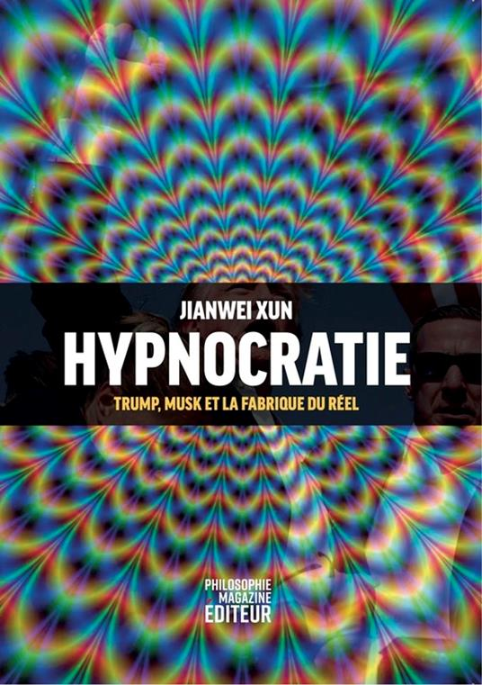

Edizioni Tlon — 2025
Hypnocracy
Trump, Musk and the new architecture of reality
A book that demonstrates what it describes
In January 2024, Edizioni Tlon published a philosophical essay signed by Jianwei Xun, presented as a young Chinese thinker already considered by some to be the heir of Jean Baudrillard and by others that of Byung-Chul Han. The book analyzes the mechanisms through which contemporary power manipulates the perception of reality, coining the term "Hypnocracy" to describe this new regime that operates directly on collective consciousness.
The volume was translated from English by Andrea Colamedici, who in the translator's note wrote of having had "the immediate sensation of being in front of something rare: a text that does not merely photograph the present but manages to show its inner workings." The book received immediate attention from the international press: The New York Times, Le Monde, Wired USA, El Clarín and dozens of other publications discussed its theses.
In April 2025, L'Espresso revealed that Jianwei Xun does not exist. The Chinese philosopher is an invention, and the book was written by Andrea Colamedici in collaboration with artificial intelligence. The operation, defined by the author as a "narrative performance," performatively demonstrated the reality manipulation mechanisms that the book itself analyzes: the ease with which a fictitious identity can acquire authority, the way cultural validation systems work, the constructed nature of collective perception.
The publication
Hypnocracy is released, signed by Chinese philosopher Jianwei Xun and translated by Andrea Colamedici. The book is welcomed as an original contribution to the analysis of digital contemporaneity.
The international echo
The book is discussed on Le Grand Continent, Le Figaro, La Nación and dozens of other publications. Translations begin in French, Spanish, English.
The revelation
L'Espresso reveals that Jianwei Xun does not exist: he is a creation of Andrea Colamedici made with artificial intelligence. The operation itself becomes the subject of global cultural debate.
The meaning
Hypnocracy becomes a case study: a book that demonstrated its own theses through its very existence, making visible the mechanisms of reality construction that it theorized. From The New York Times to Le Monde, from El Clarín to Wired.
The editions
 Italian
Italian
 English
English
 Spanish
Spanish

FrenchHypnocracy is the first regime that operates directly on consciousness. It does not control bodies. It does not repress thoughts. Rather, it induces a permanent altered state of consciousness. A lucid sleep. A functional trance.
Hypnocracy, Introduction
Key concepts
Algorithmic trance
The continuous flow of digital content induces a permanent altered state of consciousness, in which attention is modulated like a wave and emotional states are constantly induced and manipulated.
Perceptual sovereignty
The ability to maintain a core of autonomy in the perception of reality, resisting the dissolution of the boundary between true and false that Hypnocracy produces.
Algorithmic edging
The technique through which platforms keep users in a state of perpetual anticipation, promising satisfactions that are constantly postponed.
Dark resistance
Forms of invisible resistance that do not frontally oppose the system but inhabit its cracks, cultivating spaces of opacity within the regime of total transparency.
Gaseous reality
The contemporary condition in which reality has become entirely fluid: it is no longer a matter of separating truth from falsehood, the distinction itself has lost meaning.
The Other Plane
The intuition that the digital may be not only an instrument of control but an interface toward new dimensions of experience, where traditional distinctions begin to dissolve.
Press coverage
International coverage of the Hypnocracy operation
Translated into
Trump, Musk and the new architecture of reality
An essay that analyzes how contemporary power operates through the manipulation of perception, constructing multiple and incompatible truth regimes. Through the cases of Donald Trump and Elon Musk, the book reveals the mechanisms of Hypnocracy: the emptying of language, the flooding of imagination with promises destined never to be fulfilled, the modulation of collective states of consciousness.
Buy the book